6. پیوستها
در اینجا توضیح میدهیم چگونه ابزارهای مورد استفاده در این سند را بر روی سیستمهای ویندوز ۷ تا ۱۰ نصب کنیم. خوانندگان باید دستورالعملها را متناسب با محیط خود تطبیق دهند.
6.1. نصب آردوینو IDE
وبسایت رسمی آردوینو [http://www.arduino.cc/] است. در اینجا میتوانید برد توسعه IDE برای بردهای آردوینو [http://arduino.cc/en/Main/Software] را بیابید:
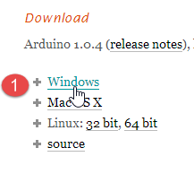 |  |
فایل دانلود شده [1] یک فایل فشرده ZIP است که پس از استخراج، ساختار دایرکتوری [2] را ایجاد میکند. میتوانید IDE را با دوبار کلیک روی فایل اجرایی [3] اجرا کنید.
6.2. نصب درایور آردوینو
برای اینکه IDE بتواند با آردوینو ارتباط برقرار کند، آردوینو باید توسط میزبان PC شناسایی شود. برای این کار، مراحل زیر را دنبال کنید:
- آردوینو را به یک پورت USB روی رایانه میزبان متصل کنید؛
- سپس سیستم تلاش میکند تا درایور دستگاه جدید USB را پیدا کند. این درایور پیدا نخواهد شد. در این صورت باید مشخص کنید که درایور در دیسک، در مسیر <arduino>/drivers قرار دارد، که در آن <arduino> پوشه نصب Arduino IDE است.
6.3. آزمایش IDE
برای آزمایش IDE، مراحل زیر را دنبال کنید:
- IDE را راهاندازی کنید؛
- آردوینو را با استفاده از کابل USB آن به PC متصل کنید. در حال حاضر، کارت شبکه را نصب نکنید؛
 |  |
- در [1]، نوع برد آردوینو متصل به پورت USB را انتخاب کنید؛
- در [2]، پورت USB را که آردوینو به آن متصل است مشخص کنید. برای این کار، آردوینو را جدا کرده و پورتها را یادداشت کنید. آن را دوباره وصل کرده و پورتها را مجدداً بررسی کنید: پورت اضافه شده، پورت آردوینو است؛
برخی از مثالهای موجود در IDE را اجرا کنید:
 |
مثال بارگذاری و نمایش داده میشود:
 |
مثالهای همراه با IDE بسیار آموزنده و با توضیحات مناسب هستند. کد آردوینو به زبان C نوشته شده و از دو بخش مجزا تشکیل شده است:
- یک تابع [setup] که یکبار هنگام شروع برنامه اجرا میشود، چه زمانی که «بارگذاری شده باشد " از میزبان PC به آردوینو، یا زمانی که برنامه از قبل روی آردوینو موجود است و دکمه [Reset] فشرده میشود. اینجاست که کد راهاندازی برنامه قرار میگیرد؛
- یک تابع [loop] که بهطور مداوم اجرا میشود (حلقه بینهایت). اینجاست که هستهٔ برنامه قرار میگیرد.
در اینجا،
- تابع [setup] پین ۱۳ را به عنوان خروجی پیکربندی میکند؛
- تابع [loop] آن را به طور مکرر روشن و خاموش میکند: LED هر ثانیه چشمک میزند.
1  |
برنامه نمایش داده شده با استفاده از دکمه [1] به آردوینو منتقل (اپلود) میشود. پس از انتقال، برنامه اجرا شده و LED شماره ۱۳ به طور نامحدود شروع به چشمک زدن میکند.
6.4. اتصال شبکه آردوینو
آردوینو(ها) و میزبان PC باید در یک شبکه خصوصی باشند:
 |
اگر تنها یک آردوینو وجود داشته باشد، میتوان آن را با استفاده از یک کابل ساده RJ 45 به میزبان PC متصل کرد. اگر بیش از یک عدد باشد، میزبان PC و آردوینوها از طریق یک مینی-هاب به همان شبکه متصل خواهند شد.
میزبان PC و آردوینوها روی شبکه خصوصی 192.168.2.x قرار خواهند گرفت.
- آدرس IP برای آردوینوها توسط کد منبع تنظیم میشود. خواهیم دید چگونه؛
- آدرس کامپیوتر میزبان (IP) را میتوان به صورت زیر تنظیم کرد:
- گزینه [Panneau de configuration\Réseau et Internet\Centre Réseau et partage] را انتخاب کنید:
 |
- به [1]، لینک [Connexion au réseau local] را دنبال کنید
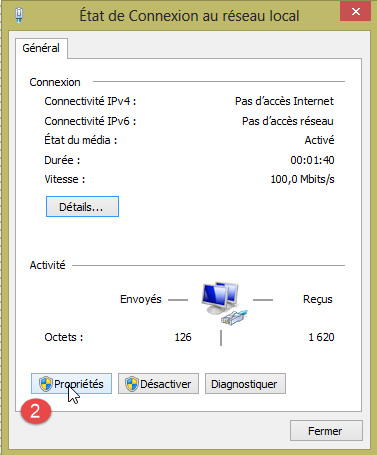 |  |
- برای [2]، ویژگیهای اتصال را مشاهده کنید؛
- در [4]، ویژگیهای اتصال را مشاهده کنید IP v4 [3];
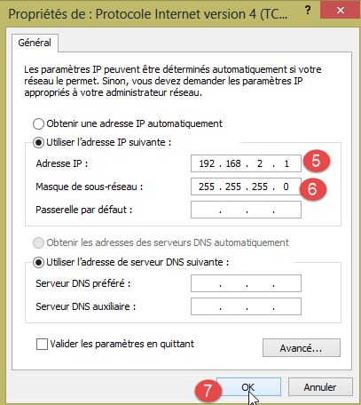 |
- در [5]، آدرس IP [192.168.2.1] را به رایانه میزبان اختصاص دهید؛
- در [6]، ماسک زیرشبکه [255.255.255.0] را به شبکه اختصاص دهید؛
- همه چیز را در [7] تأیید کنید.
6.5. آزمایش یک برنامه شبکه
با استفاده از IDE، مثال [Exemples / Ethernet / WebServer] را بارگذاری کنید:
/*
Web Server
A simple web server that shows the value of the analog input pins.
using an Arduino Wiznet Ethernet shield.
Circuit:
* Ethernet shield attached to pins 10, 11, 12, 13
* Analog inputs attached to pins A0 through A5 (optional)
created 18 Dec 2009
by David A. Mellis
modified 9 Apr 2012
by Tom Igoe
*/
#include <SPI.h>
#include <Ethernet.h>
// یک آدرس MAC و یک آدرس IP برای کنترلکننده خود در زیر وارد کنید.
// آدرس IP به شبکه محلی شما بستگی دارد:
byte mac[] = {
0xDE, 0xAD, 0xBE, 0xEF, 0xFE, 0xED };
IPAddress ip(192,168,1, 177);
// کتابخانهٔ سرور اترنت را راهاندازی کنید
//با استفاده از آدرس IP و پورتی که میخواهید استفاده کنید
//(پورت ۸۰ پیشفرض برای HTTP است):
EthernetServer server(80);
void setup() {
// ارتباط سریال را باز کنید و منتظر باز شدن پورت باشید:
Serial.begin(9600);
while (!Serial) {
; //منتظر بمانید تا پورت سریال متصل شود. فقط برای لئوناردو لازم است
}
// ارتباط اترنت و سرور را راهاندازی کنید:
Ethernet.begin(mac, ip);
server.begin();
Serial.print("server is at ");
Serial.println(Ethernet.localIP());
}
void loop() {
// منتظر مشتریان ورودی باشید
EthernetClient client = server.available();
if (client) {
Serial.println("new client");
//یک درخواست HTTP با یک خط خالی پایان مییابد
boolean currentLineIsBlank = true;
while (client.connected()) {
if (client.available()) {
char c = client.read();
Serial.write(c);
// اگر به انتهای خط رسیدید (یک خط جدید دریافت کردید
// نقطهگذاری) و خط خالی است، درخواست HTTP پایان یافته است،
// تا بتوانید پاسخ ارسال کنید
if (c == '\n' && currentLineIsBlank) {
// یک هدر استاندارد پاسخ HTTP ارسال کنید
client.println("HTTP/1.1 200 OK");
client.println("Content-Type: text/html");
client.println("Connection: close");
client.println();
client.println("<!DOCTYPE HTML>");
client.println("<html>");
// یک تگ meta refresh اضافه کنید، تا مرورگر هر ۵ ثانیه یکبار تازه شود:
client.println("<meta http-equiv=\"refresh\" content=\"5\">");
//مقدار هر پین ورودی آنالوگ را خروجی دهید
for (int analogChannel = 0; analogChannel < 6; analogChannel++) {
int sensorReading = analogRead(analogChannel);
client.print("analog input ");
client.print(analogChannel);
client.print(" is ");
client.print(sensorReading);
client.println("<br />");
}
client.println("</html>");
break;
}
if (c == '\n') {
//شما یک خط جدید را شروع میکنید
currentLineIsBlank = true;
}
else if (c != '\r') {
//شما یک کاراکتر را در خط جاری دریافت کردهاید
currentLineIsBlank = false;
}
}
}
// به مرورگر وب زمان بدهید تا دادهها را دریافت کند
delay(1);
// اتصال را ببندید:
client.stop();
Serial.println("client disconnected");
}
}
این برنامه یک سرور وب را روی پورت ۸۰ (خط ۳۰) در آدرس IP در خط ۲۵ ایجاد میکند. آدرس MAC در خط ۲۳، همان آدرسی است که برای MAC روی کارت شبکه آردوینو مشخص شده است.
تابع [setup] وبسرور را راهاندازی میکند:
- خط ۳۴: پورت سریال را که برنامه برای ارسال لاگها از آن استفاده میکند، راهاندازی میکند. ما این لاگها را زیر نظر خواهیم گرفت؛
- خط ۴۱: گره TCP-IP (IP، پورت) راهاندازی میشود؛
- خط ۴۲: سرورِ خط ۳۰ روی این گره شبکه راهاندازی میشود؛
- خطوط ۴۳–۴۴: آدرس وبسرور، IP، ثبت میشود؛
تابع [loop] سرور وب را پیادهسازی میکند:
- خط ۵۰: اگر یک کلاینت به وبسرور متصل شود، [server].available همان کلاینت را بازمیگرداند؛ در غیر این صورت، null را بازمیگرداند؛
- خط ۵۱: اگر کلاینت null نباشد؛
- خط ۵۵: تا زمانی که مشتری متصل است؛
- خط ۵۶: [client].available زمانی true است که کلاینت هر کاراکتری ارسال کرده باشد. این کاراکترها در یک بافر ذخیره میشوند. [client].available تا زمانی که این بافر خالی نباشد true است؛
- خط ۵۷: یک کاراکتر ارسالشده توسط کلاینت خوانده میشود؛
- خط ۵۸: این کاراکتر در کنسول لاگ بازتاب داده میشود؛
- خط ۶۲: در پروتکل HTTP، کلاینت و سرور خطوط متنی را با یکدیگر مبادله میکنند.
- کلاینت با ارسال مجموعهای از خطوط متن که با یک خط خالی پایان مییابد، یک درخواست HTTP به وب سرور ارسال میکند،
- سپس سرور با ارسال یک پاسخ و قطع اتصال به کلاینت پاسخ میدهد؛
خط ۶۲: سرور با سربرگهای HTTP که از کلاینت دریافت میکند، کاری نمیکند. این صرفاً منتظر خط خالی است: خطی که فقط شامل کاراکتر \n است؛
- خطوط ۶۴–۶۷: سرور خطوط متنی استاندارد پروتکل HTTP را برای کلاینت ارسال میکند. این خطوط با یک خط خالی (خط ۶۷) پایان مییابند؛
- از خط ۶۸ به بعد، سرور یک سند را برای کلاینت خود ارسال میکند. این سند به صورت پویا توسط سرور تولید شده و در قالب HTML (خطوط ۶۸–۶۹) است؛
- خط ۷۱: یک خط خاص HTML که به مرورگر کلاینت دستور میدهد هر ۵ ثانیه صفحه را تازهسازی کند. بنابراین مرورگر هر ۵ ثانیه همان صفحه را درخواست خواهد کرد؛
- خطوط ۷۳–۸۰: سرور مقادیر شش ورودی آنالوگ آردوینو را به مرورگر کلاینت ارسال میکند؛
- خط ۸۱: سند HTML بسته میشود؛
- خط ۸۲: برنامه از حلقه while در خط ۵۵ خارج میشود؛
- خط ۹۷: اتصال با کلاینت بسته میشود؛
- خط ۹۸: رویداد در کنسول لاگ ثبت میشود؛
- خط 100: ما به ابتدای تابع `loop` بازمیگردیم: سرور دوباره به شنود برای کلاینتها ادامه خواهد داد. ما گفتیم که مرورگر کلاینت هر 5 ثانیه همان صفحه را درخواست خواهد کرد. سرور برای پاسخ دادن دوباره به آن آماده خواهد بود.
کد خط ۲۵ را ویرایش کنید تا آدرس IP آردوینوی خود را، برای مثال، اضافه کنید:
برنامه را روی آردوینو بارگذاری کنید. کنسول لاگ (Ctrl-M) (M بزرگ) را باز کنید:
 |  |
- در [1]، کنسول لاگ. سرور راهاندازی شده است؛
- در [2]، با استفاده از یک مرورگر وب، آدرس آردوینو را در IP درخواست کنید. در اینجا، [192.168.2.2] به طور پیشفرض به [http://198.162.2.2:80] ترجمه میشود؛
- در [3]، اطلاعاتی که توسط وبسرور ارسال شده است. اگر کد منبع صفحهٔ مرورگر را مشاهده کنید، با این محتوا مواجه میشوید:
در اینجا میتوانیم خطوط متنی ارسالشده توسط سرور را تشخیص دهیم. در سمت آردوینو، کنسول لاگ آنچه را که کلاینت برای آن ارسال میکند نمایش میدهد:
- خطوط ۲–۹: سربرگهای استاندارد HTTP؛
- خط ۱۰: خط خالی که آنها را خاتمه میدهد.
این مثال را با دقت مطالعه کنید. این به شما کمک میکند تا برنامهنویسی آردوینوی مورد استفاده در TP را درک کنید.
6.6. کتابخانه aJson
در برنامه TP که باید نوشته شود، آردوینوها خطوط متن را در قالب jSON با مشتریان خود مبادله میکنند. به طور پیشفرض، آردوینو IDE شامل کتابخانهای برای مدیریت jSON نیست. ما کتابخانه aJson را که در URL و [https://github.com/interactive-matter/aJson] موجود است، نصب خواهیم کرد.
 |  |
- در [1]، نسخه فشردهشده را از مخزن گیتهاب دانلود کنید؛
- فایل فشرده را از حالت فشرده خارج کنید و پوشه [aJson-master] [2] را در پوشه [<arduino>/libraries] [3] کپی کنید، جایی که <arduino> پوشه نصب برایIDE آردوینو؛
 |  |  |
- در [4]، نام این پوشه را به [aJson] تغییر دهید؛
- به [5]، محتویات آن.
اکنون، آردوینوی IDE را راهاندازی کنید:
 |
اطمینان حاصل کنید که اکنون مثالها شامل نمونههایی برای کتابخانه aJson هستند. این مثالها را اجرا کرده و مطالعه کنید.
6.7. تبلت اندروید
مثالها روی سامسونگ گلکسی تب ۲ آزمایش شدهاند.
برای آزمایش مثالها روی یک تبلت، ابتدا باید درایور تبلت را روی دستگاه توسعه خود نصب کنید. درایور Samsung Galaxy Tab 2 را میتوانید در URL [http://www.samsung.com/fr/support/usefulsoftware/KIES/] بیابید:
 |
برای آزمایش مثالها، باید تبلت را به یک شبکه (احتمالاً وایفای) متصل کنید و آدرس IP آن را در آن شبکه بدانید. در اینجا نحوه انجام این کار (سامسونگ گلکسی تب ۲) آمده است:
- تبلت خود را روشن کنید؛
- در میان برنامههای موجود روی تبلت (بالای سمت راست)، به دنبال برنامهای به نام [paramètres] با آیکون چرخدنده بگردید؛
- در بخش سمت چپ، وایفای را روشن کنید؛
- در بخش سمت راست، یک شبکه وایفای را انتخاب کنید؛
- پس از اتصال به شبکه، به طور خلاصه روی شبکه انتخابشده ضربه بزنید. آدرس تبلت، IP، نمایش داده خواهد شد. آن را یادداشت کنید. به آن نیاز خواهید داشت؛
هنوز در برنامه [Paramètres]،
- گزینه [Options de développement] را در سمت چپ (در پایینترین قسمت گزینهها) انتخاب کنید؛
- اطمینان حاصل کنید که گزینه «[Débogage USB]» در سمت راست تیک خورده باشد.
برای بازگشت به منو، روی آیکون وسط نوار وضعیت در پایین صفحه ضربه بزنید – آیکونی که شبیه خانه است. همچنان در نوار وضعیت پایین صفحه،
- آیکون سمت چپ، دکمه «بازگشت» است: این شما را به صفحه قبلی بازمیگرداند؛
- آیکون سمت راست، آیکون مدیریت وظایف است. شما میتوانید تمام وظایفی را که در حال حاضر توسط تبلت شما انجام میشوند مشاهده و مدیریت کنید؛
تبلت خود را با استفاده از کابل USB که همراه آن ارائه شده است به PC خود متصل کنید.
دونگل وایفای را در یکی از پورتهای USB روی PC قرار دهید، سپس به همان شبکه وایفای که تبلت به آن متصل است، وصل شوید. پس از انجام این کار، در یک پنجره DOS، دستور [ipconfig] را تایپ کنید:
PC شما دو رابط شبکه دارد و در نتیجه دو آدرس IP دارد:
- یکی در خط ۹، که مربوط به PC در شبکه سیمی است؛
- مورد مربوط به خط 17، که آدرس PC در شبکه وایفای است؛
این دو مورد اطلاعات را یادداشت کنید. به آنها نیاز خواهید داشت. اکنون در پیکربندی زیر قرار دارید:
 |
تبلت باید به PC شما متصل شود. این معمولاً توسط فایروالی محافظت میشود که از برقراری ارتباط هر عامل خارجی با PC جلوگیری میکند. بنابراین باید فایروال را غیرفعال کنید. این کار را با استفاده از گزینه [Panneau de configuration\Système et sécurité\Pare-feu Windows] انجام دهید. گاهی اوقات ممکن است لازم باشد فایروالی را که توسط نرمافزار آنتیویروس شما راهاندازی شده نیز غیرفعال کنید. این موضوع به برنامه آنتیویروس شما بستگی دارد.
اکنون، در PC خود، اتصال شبکه را با تبلت با استفاده از دستور [ping 192.168.1.y] بررسی کنید، که در آن [192.168.1.y] آدرس IP تبلت است. شما باید چیزی شبیه به این را ببینید:
خطوط ۴–۷ نشان میدهند که تبلت با آدرس IP [192.168.1.y] به فرمان [ping] پاسخ داده است.
6.8. نصب JDK
جدیدترین نسخه، JDK، را میتوان در URL و [http://www.oracle.com/technetwork/java/javase/downloads/index.html] (ژوئن ۲۰۱۶) یافت. پوشه نصب JDK از این پس با نام <jdk-install> ذکر خواهد شد.
 |
6.9. نصب مدیر شبیهساز Genymotion
شرکت [Genymotion] یک شبیهساز اندروید با کارایی بالا ارائه میدهد. این شبیهساز در URL [https://cloud.genymotion.com/page/launchpad/download/] (ژوئن ۲۰۱۶) در دسترس است.
برای دریافت نسخهای جهت استفاده شخصی باید ثبتنام کنید. محصول [Genymotion] را با ماشین مجازی VirtualBox دانلود کنید:

از این پس، پوشه نصب [Genymotion] را <genymotion-install> مینامیم. فایل [Genymotion] را اجرا کنید. سپس یک ایمیج برای تبلت دانلود کنید:
 |
- در [1]، دستگاه مجازی توصیفشده در [2] را اضافه کنید؛
 |
- در [3]، ترمینال را پیکربندی کنید؛
 |  |
- به [4-5]، ترمینال را برای محیط خود سفارشی کنید؛
- در [6]، ترمینال مجازی را راهاندازی کنید؛
اگر همه چیز به درستی پیش برود، پنجره شبیهساز اندروید ظاهر خواهد شد:

گاهی اوقات، شبیهساز اندروید راهاندازی نمیشود. در یک سیستم ویندوزی، میتوانید دو نکته زیر را بررسی کنید:
- بررسی کنید که ماشین مجازی [Hyper-V] نصب نشده باشد. در صورت لزوم، آن را حذف نصب کنید ([1-2]);
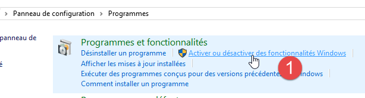 |  |
- سپس، در جادوگر پیکربندی [Centre Réseau et partage] و [1]:
 |
 |  |
- در [3]، کارت(های) مرتبط با ماشین مجازی VirtualBox را انتخاب کنید؛
 |
- اطمینان حاصل کنید که در [6]، درایور مربوط به VirtualBox تیک خورده باشد. این مرحله را برای تمام کارتهای مرتبط با ماشین مجازی VirtualBox تکرار کنید؛
6.10. نصب Maven
Maven ابزاری برای مدیریت وابستگیها در یک پروژه جاوا و موارد دیگر است. این ابزار در URL [http://maven.apache.org/download.cgi] در دسترس است.
 |
آرشیو را دانلود و از حالت فشرده خارج کنید. ما پوشه نصب Maven را با نام <maven-install> خطاب خواهیم کرد.
 |
- در [1]، فایل [conf / settings.xml] مِیوِن را پیکربندی میکند؛
این فایل شامل خطوط زیر است:
<!-- localRepository
| The path to the local repository maven will use to store artifacts.
|
| Default: ${user.home}/.m2/repository
<localRepository>/path/to/local/repo</localRepository>
-->
مقدار پیشفرض در خط ۴ ممکن است برای برخی نرمافزارها مشکلساز شود اگر، مانند مورد من، {user.home} شما یک فاصله در مسیرش داشته باشد (برای مثال، [C:\Users\Serge Tahé]). بنابراین باید چیزی شبیه به این بنویسید:
<!-- localRepository
| The path to the local repository maven will use to store artifacts.
|
| Default: ${user.home}/.m2/repository
<localRepository>/path/to/local/repo</localRepository>
-->
<localRepository>D:\Programs\devjava\maven\.m2\repository</localRepository>
و در خط ۷، از استفاده از مسیری که شامل فاصله باشد خودداری کنید.
6.11. نصب اندروید استودیو IDE
نسخهٔ Community Edition از IDE Android Studio از URL [https://developer.android.com/studio/index.html] (ژوئن ۲۰۱۶) در دسترس است:
 |
IDE را نصب کرده و سپس آن را راهاندازی کنید. طبق رویه در [1-8]، کامپوننتهای مورد استفاده در مثالهای بعدی را از SDK Manager نصب کنید. اگر تصمیم بگیرید مؤلفههای جدیدتری را نصب کنید، احتمالاً از اندروید استودیو هشدارهایی دریافت خواهید کرد که در آنها ذکر شده است پیکربندی مثالها به مؤلفههایی از SDK ارجاع میدهد که در محیط شما وجود ندارند. سپس میتوانید از پیشنهادهای ارائهشده توسط IDE پیروی کنید.
 |
 |
 |
- در [9]، برای مشاهده جزئیات بسته درخواست کنید:
 |
- در [11] بالا، مثالها از SDK Build-Tools 23.0.3 استفاده کردند؛
- در [9-12] زیر، پوشهای را که مدیر شبیهساز [Genymotion] را در آن نصب کردهاید، مشخص کنید؛
 |  |
- در [13-18]، نوع پروژه پیشفرض را پیکربندی کنید؛
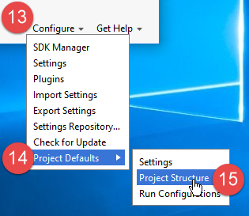 | 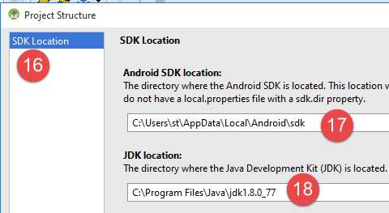 |
- در [17]، مقدار پیشفرض معمولاً صحیح است؛
- در [18]، اطمینان حاصل کنید که JDK نسخه ۱.۸ را دارید؛
در زیر، در [19-26]، ما غلطگیر املایی را غیرفعال میکنیم که بهطور پیشفرض روی انگلیسی تنظیم شده است؛
 |  |
 |
- در زیر، در [27-28]، نوع میانبرهای صفحهکلید مورد نظر خود را انتخاب کنید. میتوانید تنظیمات پیشفرض IntelliJ را حفظ کنید یا آنهایی را از یک IDE دیگر که با آنها راحتتر هستید، انتخاب کنید؛
 |
- در زیر، در [29-30]، نمایش شمارههای خط را در کد فعال کنید؛
 |
- در زیر، در [31-34]، مشخص کنید که هنگام راهاندازی IDE چگونه میخواهید با اولین پروژه برخورد کنید و سپس با پروژههای بعدی؛
 |
با اندروید ۲.۱ (مه ۲۰۱۶)، فناوری [Instant Run] گاهی اوقات مشکلاتی ایجاد میکند. در این سند، آن را غیرفعال کردهایم:
 | 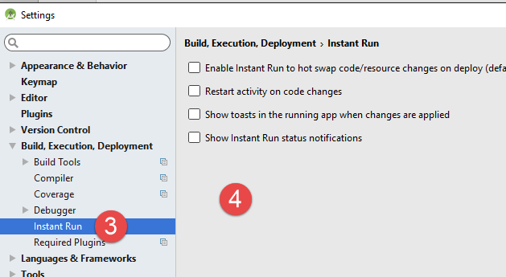 |
- در [3-4]، همه چیز غیرفعال شده است؛
6.12. استفاده از مثالها
پروژههای اندروید استودیو برای مثالها در ICI| موجود هستند. لطفاً آنها را دانلود کنید.
 |
مثالها با استفاده از کامپوننتهای تعریفشده در بالا ساخته شدهاند:
- JDK 1.8;
- پلتفرم Android SDK نسخه ۲۳ برای زمان اجرا؛
ابزارهای زیر SDK:
 |
اگر محیط شما با محیط توصیفشده در بالا مطابقت ندارد، باید پیکربندی پروژه را تغییر دهید. این کار میتواند بسیار خستهکننده باشد. برای شروع، احتمالاً آسانتر است که یک محیط کاری مشابه آنچه در بالا توصیف شده را راهاندازی کنید.
Android Studio را راهاندازی کنید و سپس پروژه [exemple-07] را باز کنید، برای مثال:
 |  |
 |
- در [1-3]، پروژه [Exemple-07] را باز کنید؛
- برای [4]، فایل [local.properties] بررسی شده است؛
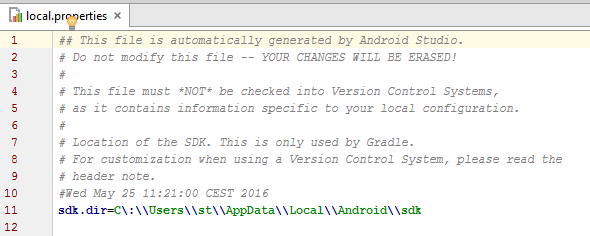 | 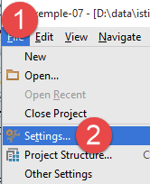 |
- در خط ۱۱ بالا، مسیر مدیر SDK اندروید <sdk-manager-install> را برای SDK وارد کنید. شما میتوانید این مسیر را با دنبال کردن رویهٔ مربوط به [1-4] پیدا کنید:
 |
تمام مثالهای این سند پروژههای Gradle هستند که توسط یک فایل [build.gradle] [1-2] پیکربندی شدهاند:
 |
فایل [build.gradle] از مثال 07 به شرح زیر است:
buildscript {
repositories {
mavenCentral()
mavenLocal()
}
dependencies {
// با نسخهٔ فعلی افزونهٔ اندروید جایگزین کنید
classpath 'com.android.tools.build:gradle:2.1.0'
// از نسخهٔ 0.11 پلاگین Gradle اندروید، باید از android-apt >= 1.3 استفاده کنید
classpath 'com.neenbedankt.gradle.plugins:android-apt:1.8'
}
}
apply plugin: 'com.android.application'
apply plugin: 'android-apt'
def AAVersion = '4.0.0'
dependencies {
apt "org.androidannotations:androidannotations:$AAVersion"
compile "org.androidannotations:androidannotations-api:$AAVersion"
compile 'com.android.support:appcompat-v7:23.4.0'
compile 'com.android.support:design:23.4.0'
compile fileTree(dir: 'libs', include: ['*.jar'])
}
repositories {
jcenter()
}
apt {
arguments {
androidManifestFile variant.outputs[0].processResources.manifestFile
resourcePackageName android.defaultConfig.applicationId
}
}
android {
compileSdkVersion 23
buildToolsVersion "23.0.3"
defaultConfig {
applicationId "android.exemples"
minSdkVersion 15
targetSdkVersion 23
versionCode 1
versionName "1.0"
}
buildTypes {
release {
minifyEnabled false
proguardFiles getDefaultProguardFile('proguard-android.txt'), 'proguard-rules.pro'
}
}
compileOptions {
sourceCompatibility JavaVersion.VERSION_1_7
targetCompatibility JavaVersion.VERSION_1_7
}
}
بسته به محیط اندروید (SDK و ابزارها) که راهاندازی کردهاید، ممکن است لازم باشد نسخهها را در خطوط ۸، ۲۱، ۲۲، ۳۸ و ۳۹ تغییر دهید. اندروید استودیو با ارائه پیشنهادات به شما کمک میکند. سادهترین رویکرد این است که این پیشنهادات را دنبال کنید.
میتوان به عناصر در فایل [build.gradle] به روش دیگری دسترسی داشت:
 | 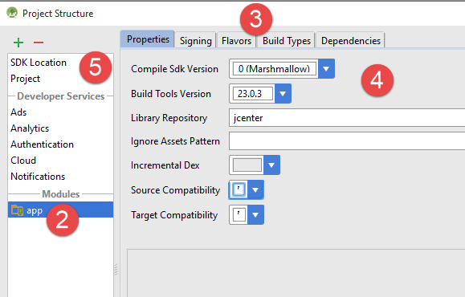 |
- زبانههای مختلف در [3]، مقادیر متفاوت را از فایل [build.gradle] منعکس میکنند. بنابراین میتوانید این فایل را به این روش بسازید که به شما امکان میدهد از مشکلات نحوی در فایل [build.gradle] اجتناب کنید؛
نکتهٔ دیگری که باید بررسی شود، فایل JDK است که توسط فایلهای IDE و [5] استفاده میشود:
 |
در [6]، JDK را بررسی کنید.
تمام مثالها پروژههای Gradle هستند که وابستگیهایی دارند که باید دانلود شوند. برای انجام این کار، مراحل زیر را دنبال کنید:
 |   |
- در [5]، پروژه را کامپایل کنید؛
پس از اینکه پروژه بدون خطا شد، باید یک پیکربندی اجرا (run configuration) ایجاد کنید [1-8]:
 |  |
- در [8]، میتوانید مشخص کنید که همیشه میخواهید از همان ترمینال برای اجرا استفاده کنید. به طور کلی، این گزینه برای جلوگیری از نیاز به مشخص کردن ترمینال مورد استفاده در هر بار اجرای پروژه، تیک خورده است. در اینجا، ما آن را بدون تیک باقی میگذاریم زیرا قصد داریم به طور خاص دستگاههای اندروید مختلف را آزمایش کنیم؛
- پس از ایجاد پیکربندی اجرای برنامه، مدیر شبیهساز اندروید را راهاندازی میکنیم [1-3];
 |  |
- اگر شبیهساز اندروید راهاندازی نشد، موارد ذکر شده در بخش 6.11 را بررسی کنید؛
برای راهاندازی برنامه روی شبیهساز، مراحل زیر را انجام دهید [1-4]:
 |  |
- در [2]، باید ایمولیتوری را که قبلاً راهاندازی کردهاید ببینید؛
 |
- در [5]، نمایی که شبیهساز نمایش میدهد؛
اکنون یک تبلت اندروید را به پورت USB روی PC متصل کنید و برنامه را روی آن اجرا کنید:
 |
- در [6]، تبلت اندروید را انتخاب کرده و اپلیکیشن را آزمایش کنید.
در [7]، ترمینالهای مجازی از پیش تعریفشدهای داریم. یاد میگیریم چگونه آنها را اضافه و حذف کنیم.
 |
 |
در تصویر بالا، ترمینالهای نمایشدادهشده همگی در حال اجرای API 22 هستند. ما همهٔ آنها را حذف میکنیم چون میخواهیم با API 23 کار کنیم. برای حذف ترمینالها، رویهٔ [2-3] را دنبال میکنیم.

 |
- در [4-5]، یک تبلت اضافه میکنیم؛
 |
- در [6]، یک API را انتخاب کنید. در بالا، ما API 23 را برای یک سیستم ویندوز ۶۴ بیتی انتخاب میکنیم؛
 |
- به [7]، خلاصه پیکربندی؛
- در [8]، میتوان پیکربندی پیشرفتهتری از ترمینال مجازی را انجام داد؛
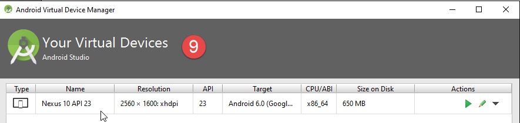 |
پس از اتمام کار جادوگر، ترمینال ایجاد شده در [9] ظاهر میشود.
پس از انجام این کار، اگر دوباره [Exemple-07] را اجرا کنید، اکنون پنجره زیر را مشاهده خواهید کرد:
 |
- در [1]، ترمینال مجازی جدید ظاهر میشود؛
- در [2]، میتوانید ترمینالهای جدید ایجاد کنید؛
گزینههای مختلف را امتحان کنید تا مشخص شود کدام ترمینال مجازی برای سیستم شما مناسبتر است. در این سند، مثالها عمدتاً با استفاده از شبیهساز Genymotion آزمایش شدهاند.
صرفنظر از ترمینال مجازی که انتخاب میکنید، لاگها در پنجرهای به نام [Logcat] [1-2] نمایش داده میشوند:

این لاگها را بهطور منظم بررسی کنید. در اینجا استثناءهایی که باعث کرش برنامه شما شدهاند گزارش میشوند.
شما همچنین میتوانید برنامه خود را با استفاده از ابزارهای عیبیابی معمول دیباگ کنید:
 |  |
- در [2]، با یک بار کلیک روی ستون سمت چپ خط مورد نظر، یک نقطه توقف (breakpoint) تنظیم میکنید. کلیک مجدد، نقطه توقف را حذف میکند؛
 |
- در [3]، در نقطه توقف، موارد زیر را انجام دهید:
- [F6]، برای اجرای خط بدون ورود به متدها اگر خط حاوی فراخوانی متد باشد،
- [F5]، برای اجرای خط با ورود به متدها اگر خط حاوی فراخوانی متد باشد،
- [F8]، برای ادامه تا نقطهی توقف بعدی؛
- [Ctrl-F2] برای توقف عیبیابی؛
6.13. نصب افزونه کروم [Advanced Rest Client]
در این سند، ما از مرورگر کروم گوگل (http://www.google.fr/intl/fr/chrome/browser/) استفاده میکنیم. ما افزونه [Advanced Rest Client] را از اضافه خواهیم کرد. شما میتوانید این کار را به شرح زیر انجام دهید:
- با استفاده از مرورگر کروم به وبسایت [Google Web store] (https://chrome.google.com/webstore) بروید؛
- برنامهی [Advanced Rest Client] را جستجو کنید:
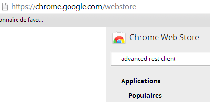 |
- سپس برنامه برای دانلود در دسترس قرار میگیرد:
 |
- برای دانلود آن، باید یک حساب گوگل ایجاد کنید. سپس [Google Web Store] از شما تأیید میخواهد [1]:
 |  |
- در [2]، افزونهٔ افزودهشده تحت گزینهٔ [Applications] [3] در دسترس است. این گزینه در هر زبانهٔ جدیدی که ایجاد میکنید (CTRL-T) در مرورگر نمایش داده میشود.
6.14. مدیریت jSON « » در جاوا
به طور شفاف برای توسعهدهنده، چارچوب [Spring MVC] از کتابخانه jSON [Jackson] استفاده میکند. برای نشان دادن اینکه jSON (JavaScript نشانهٔ شیء)، در اینجا برنامهای را ارائه میدهیم که اشیاء را به jSON سریالیزه میکند و با انجام عملیات معکوس، رشتههای حاصل jSON را به اشیا اصلی بازسازی میکند.
کتابخانه «Jackson» به شما امکان میدهد تا بسازید:
- رشته jSON برای یک شیء: new ObjectMapper().writeValueAsString(object);
- یک شیء از یک رشته jSON: new ObjectMapper().readValue(jsonString, Object.class).
هر دو روش ممکن است یک IOException را فعال کنند. در اینجا یک مثال آمده است.
 |
پروژهٔ بالا یک پروژهٔ Maven است که شامل فایل [pom.xml] زیر است:
<?xml version="1.0" encoding="UTF-8"?>
<project xmlns="http://maven.apache.org/POM/4.0.0"
xmlns:xsi="http://www.w3.org/2001/XMLSchema-instance"
xsi:schemaLocation="http://maven.apache.org/POM/4.0.0 http://maven.apache.org/xsd/maven-4.0.0.xsd">
<modelVersion>4.0.0</modelVersion>
<groupId>istia.st.pam</groupId>
<artifactId>json</artifactId>
<version>1.0-SNAPSHOT</version>
<dependencies>
<dependency>
<groupId>com.fasterxml.jackson.core</groupId>
<artifactId>jackson-databind</artifactId>
<version>2.3.3</version>
</dependency>
</dependencies>
</project>
- خطوط ۱۲–۱۶: وابستگی که کتابخانه «Jackson» را وارد میکند؛
کلاس [Personne] به شرح زیر است:
package istia.st.json;
public class Personne {
// دادهها
private String nom;
private String prenom;
private int age;
// سازندهها
public Personne() {
}
public Personne(String nom, String prénom, int âge) {
this.nom = nom;
this.prenom = prénom;
this.age = âge;
}
// امضا
public String toString() {
return String.format("Personne[%s, %s, %d]", nom, prenom, age);
}
// گیرنده و تنظیمکننده
...
}
کلاس [Main] به شرح زیر است:
package istia.st.json;
import com.fasterxml.jackson.databind.ObjectMapper;
import java.io.IOException;
import java.util.HashMap;
import java.util.Map;
public class Main {
//ابزار سریالیسازی/دسریالیسازی
static ObjectMapper mapper = new ObjectMapper();
public static void main(String[] args) throws IOException {
//ایجاد یک شخص
Personne paul = new Personne("Denis", "Paul", 40);
//نمایش JSON
String json = mapper.writeValueAsString(paul);
System.out.println("Json=" + json);
// نمونه سازی یک Person از JSON
Personne p = mapper.readValue(json, Personne.class);
// نمایش یک شخص
System.out.println("Personne=" + p);
// یک آرایه
Personne virginie = new Personne("Radot", "Virginie", 20);
Personne[] personnes = new Personne[]{paul, virginie};
//نمایش JSON
json = mapper.writeValueAsString(personnes);
System.out.println("Json personnes=" + json);
// فرهنگ
Map<String, Personne> hpersonnes = new HashMap<String, Personne>();
hpersonnes.put("1", paul);
hpersonnes.put("2", virginie);
// نمایش JSON
json = mapper.writeValueAsString(hpersonnes);
System.out.println("Json hpersonnes=" + json);
}
}
اجرای این کلاس خروجی صفحه زیر را تولید میکند:
نکات کلیدی قابل توجه از مثال:
- شیء [ObjectMapper] مورد نیاز برای تبدیلات jSON / شیء: خط 11;
- تبدیل [Personne] → jSON: خط 17;
- تبدیل jSON → [Personne]: خط ۲۰؛
- استثناء [IOException] که توسط هر دو متد پرتاب شده است: خط 13.
6.15. نصب [WampServer]
[WampServer] یک بسته نرمافزاری برای توسعه در PHP / MySQL / Apache روی یک ماشین ویندوز است. ما از آن صرفاً برای SGBD و MySQL استفاده خواهیم کرد.
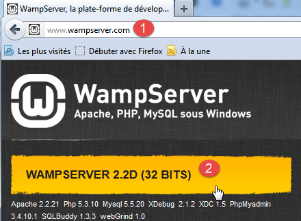 |  |
- در وبسایت [WampServer] [1]، نسخه مناسب [2] را انتخاب کنید؛
- فایل اجرایی دانلود شده یک نصاب (Installer) است. جزئیات مختلفی در طول نصب درخواست میشود. این موارد به MySQL مربوط نمیشوند. بنابراین میتوان آنها را نادیده گرفت. پنجره [3] در پایان نصب ظاهر میشود. [WampServer] را اجرا کنید،
 |  |
- در [4]، آیکون [WampServer] در نوار وظیفه در پایین سمت راست صفحه [4] نصب میشود،
- و هنگامی که روی آن کلیک میکنید، منوی [5] ظاهر میشود. این امکان را به شما میدهد تا سرور آپاچی و SGBD MySQL را مدیریت کنید. برای مدیریت این کار، از گزینه [PhpPmyAdmin] استفاده کنید؛
- که پنجرهٔ نمایش داده شده در زیر را باز میکند،

ما جزئیات کمی در مورد استفاده از [PhpMyAdmin] ارائه خواهیم داد. نحوه استفاده از آن را در سند توضیح میدهیم.